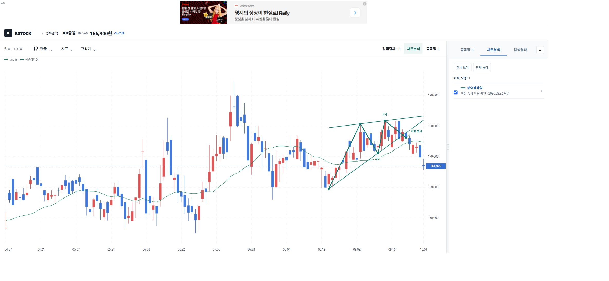
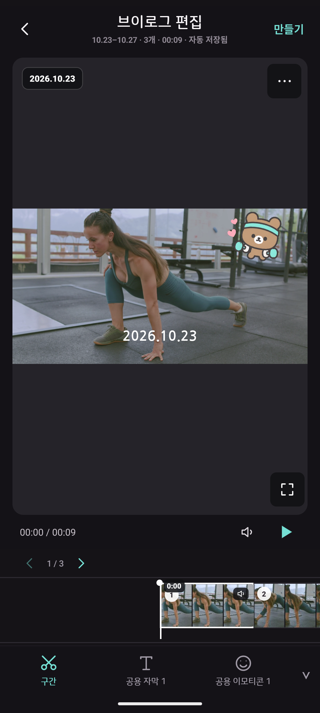
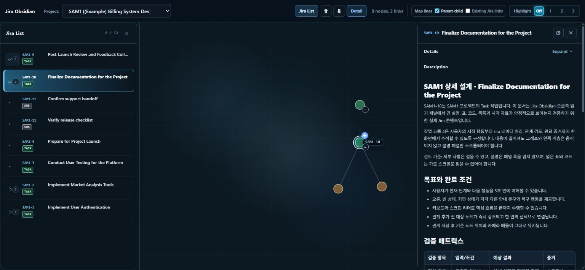
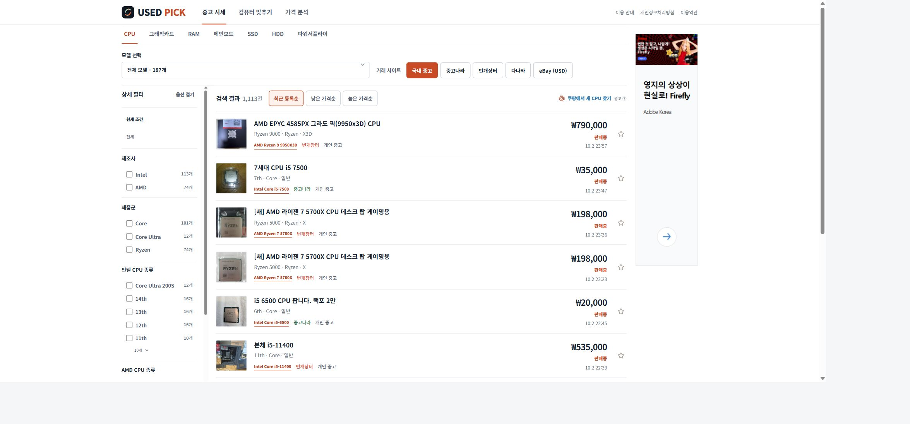
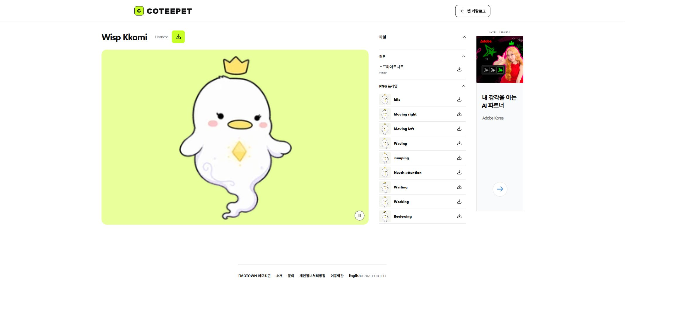
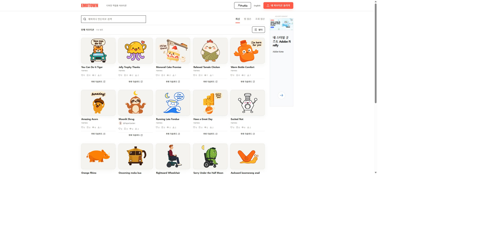
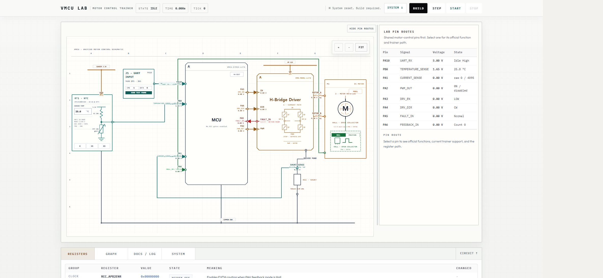
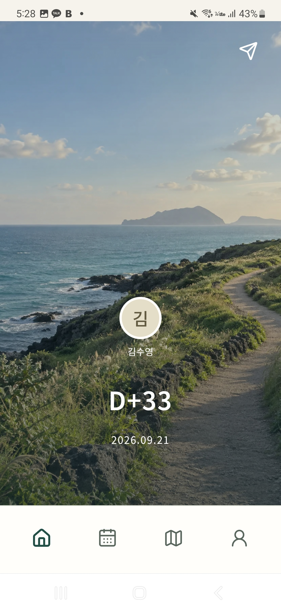
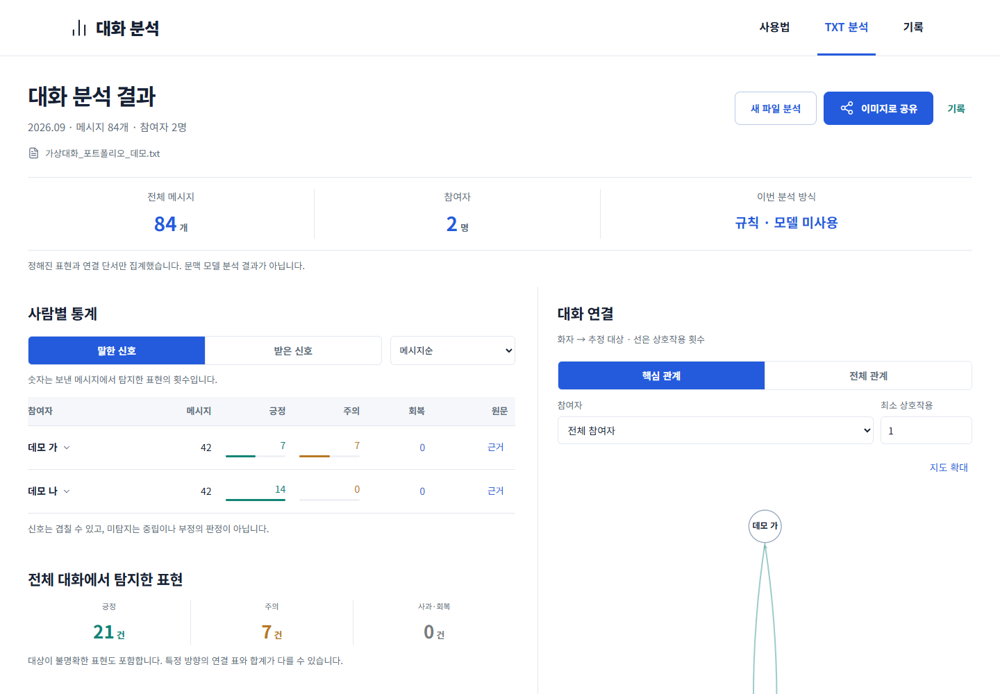

개인 프로젝트
9개 프로젝트

Train Gallery
매일 찍은 운동 영상을 달력에 기록하고, 영상별 구간·자막·이모티콘을 편집해 여러 영상을 하나의 브이로그로 만드는 모바일 앱







실무 경력
MOBASE ASECAUTOSAR 코드 생성·검증 자동화 및 개발 도구 구현
플랫폼 설계실 · R&D · 책임연구원
담당 프로젝트
- AUTOSAR 자동생성툴ARXML의 설정 정보를 분석해 CAN 수신 타임아웃, NVM 상태 관리, I/O 입력 필터 등 공통 C 코드를 생성하고 설정 누락·오류를 검출했습니다.
- 모빌진 기반 플랫폼 개발모빌진(mobilgene)에서 플랫폼 모듈을 설정·검증하고, ASW 담당자에게 배포하여 개발을 지원합니다.
- SiL 검증 환경생성 코드에서 테스트 케이스와 실행 인스턴스를 구성하고 WSL·GCC 단위 검증에 연결해, 코드 생성 결과를 반복 검증하도록 구현했습니다.
- 프로젝트 관리 대시보드ASPICE 문서 추적성, Git 이력, CI 결과와 커버리지 추이를 한 화면에서 확인하는 웹 대시보드를 직접 개발했습니다.
관련 기술
- Python · AUTOSAR
- SiL · WSL/GCC 단위 검증
- Docker · CI/CD
- 문서·코드·테스트 추적성
LS Automotive조향 칼럼·전동 시트 제어 SW 개발·검증·양산
전장 SW 설계팀 · 연구원
담당 프로젝트
- SCM Platform 1.0 · 조향 칼럼 제어위치·메모리·승하차 편의 기능을 구현하고 CAN·LIN 통신과 I/O를 검증해 양산했습니다.
- SCM Platform 2.0 · 조향 칼럼 제어플랫폼별 기능·설정을 구현하고 AUTOSAR 통합, 담당 모듈의 SiL 검증과 이슈 수정을 수행해 양산했습니다.
- PSU Platform 2.0 · 전동 시트 제어시트 제어·진단·Fail-safe 기능을 구현·검증하고 ASIL-A 기능안전 요구사항에 따른 SCD/SDD 문서를 작성했습니다.
- 통합제어기 선행과제시트·램프·카메라의 명령·상태 관리 로직과 제어기 간 통신 인터페이스를 분석·구현·검증했습니다.
관련 기술
- MATLAB/Simulink · MiL · 담당 모듈 SiL
- AUTOSAR Blockset · mobilgene
- CAN · LIN · DC Motor 제어
- ASIL-A · SCD/SDD 문서 작성
- Python 설계·통합 자동화
- 양산 HW–SW 통합 디버깅
동아전기부품냉매 밸브 액추에이터 제어 SW 개발·양산
회로2팀 · 소프트웨어 담당 · 사원 2년차
담당 프로젝트
- 냉매 밸브 액추에이터 1세대MCU 칩 공급사의 Motor Driver 로직을 분석·적용해 제어 코드를 개발하고, 제품 검증과 공정 매칭을 거쳐 양산했습니다.
- 냉매 밸브 액추에이터 2세대MCU 변경에 맞춰 3-PWM Motor Driver SW와 게이트 드라이버 인터페이스를 공동 설계하고, 코드 구현·디버깅·검증을 거쳐 양산했습니다.
- PT 센서 액추에이터 · 선행온도·압력 조건에서 니들 밸브 목표 위치를 계산·제어하는 로직을 구현하고 시제품 기능을 검증했습니다.
관련 기술
- Embedded C · LIN
- MCU 주변장치 · 3-PWM · Gate Driver
- PMSM·BLDC·DC 모터 제어
- 보호·재시동 · 양산 HW–SW 디버깅
외부활동 및 수상경력
교육 · 강의
코멘토 강사 활동
임베디드 SW 실습 강의
강의 내용
- STM32 데이터시트·SiL 실습 STM32 데이터시트 분석과 관련 SiL 환경 구성·실습 강의
- BMS·BLDC 모터 제어 실습 BMS 및 BLDC 모터 컨트롤 실습 환경 구성과 실습 강의